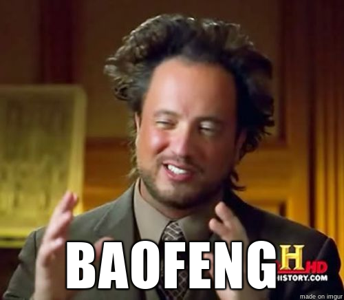

Ham
Al fin, despues de la pandemia pude hacer el curso de radio aficionado en la LU1DAR. Hoy llegó, hoy vi el mail con una notificación del enacom donde entre toda la jerga dice que soy un radio aficionado, titular de mi distintiva (seguramente compre un dominio y cuelgue todos mis sitios allí).

Ahora si puedo usar mis baofengs en la legalidad!
Cómo si fuera poco, a la tarde hice mi primer contacto en HF! Estoy seguro que nuevas historias van a surgir de todo esto. Esto abre tantos caminos que no sé por donde empezar.
73!